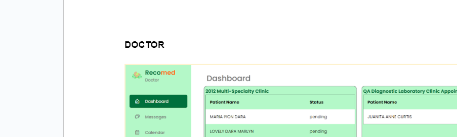
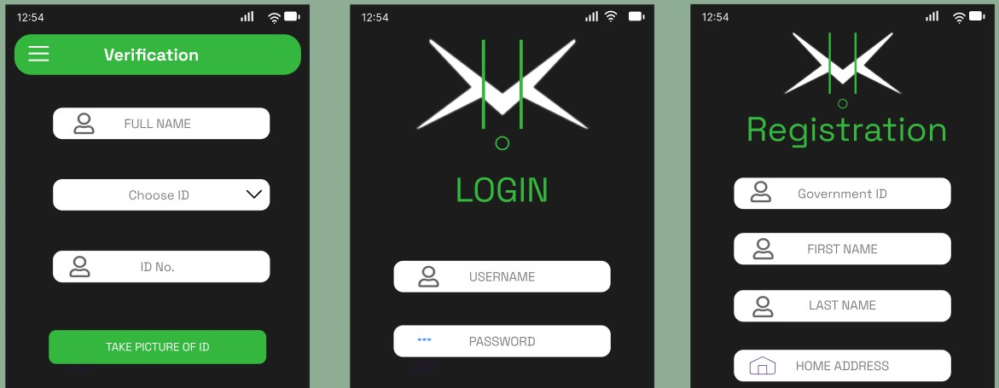

About
Reliable and detail-oriented IT professional with experience in technical support, backend development, and deployment. Proficient in system integration, automation scripting, remote troubleshooting, and cloud access control. Strong communication skills and adaptability in fast-paced virtual environments.
Experience
Integrations & Deployment Specialist
Administered databases, integrated and tested systems across testing and live environments. Developed automation scripts to streamline deployments and executed Level 1 support for web applications and user access.
IT Engineer
Managed tickets with ServiceNow, provided remote troubleshooting via PowerShell and AnyDesk, and supported software distribution and diagnostics.
Intern — Backend Developer
Built backend features using TypeScript and NestJS. Contributed to a business analytics system with emphasis on data privacy and reliable integrations.
Sales Representative
Managed customer service operations, ensured accurate sales and inventory data entry and migration.
Technical Skills
Selected Projects

Incognito Pest Control Website
Live WebsiteClient-based project — Sole fullstack developer responsible for maintaining performance, accessibility, responsiveness, and deployment reliability to support the company’s growth and online visibility.

RECOMED — Patient Records & Appointment Queueing System
Capstone Project — Led backend development, ensured full functionality of records and queueing system, and coordinated deployment and integration testing.

KIBO: SOS Made Easy
Technopreneurship Project — Led the team in design and implementation from concept to a working MVP. Focus on usability and deployment readiness.
Machine-Aided Detection & Classification of PCOS
Data Mining Project — Designed algorithms and trained predictive models; performed research and validation to ensure accuracy and uniqueness of the approach.